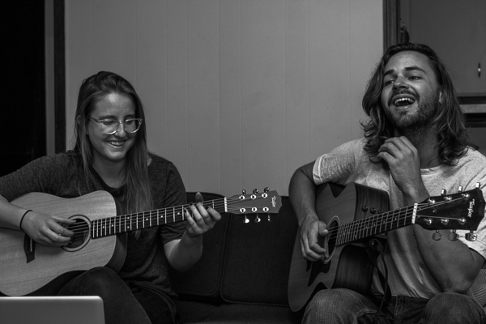

Over the course of 9 months (holy moly we’ve been at this for 9 months!) we’ve gotten the chance to hang out with Internet friends. Lots of them I’ve been Internet friends with for a few years, usually talking on Twitter or Instagram, and some have found our trip account one way or another. When we meet an Inertness friend in person for the first time it’s always a toss up:
Will this person be cool?
Will he/she think we stink?
What if we don’t get along?
Are we walking into a trap?
How should we handle the inevitable awkward silences?
I’ll admit that these are all ideas that are slightly out there, but they cross through everyone’s train of thought when they’re going to meet up with someone they met on the Internet, I think.
Adam and I rolled into Madison, WI and went over to Crescendo for some Midwest coffee vibes and to meet up with our Internet friend, Elle. It’s also where she works. You know you’re getting *catfished by someone when they say you’re name and you have no idea who the person is when you hear them say your name because they don’t look like their profile picture. That wasn’t the case here because as I was ordering my latte (darn straight I enjoy a fine latte from time to time) I saw Elle walk by, gave a wave, and a hug as the three of us started planning the events for the day.
First stop after coffee shop work was the capitol building. Of all the states we’ve visited, we’ve never visited the capitol building in any state. The one in Madison was a short drive from Crescendo and Elle said it was pretty amazing; and it is.
Original Photo Lost in the Archive
161005_Wisconsin_Madison-009.jpg
From // The Internet Brings People Together In Wisconsin
The entire building reminded me of the The Capitol in Washington DC with the dome feature, beautiful designs on the inside, and a statue on the top. Elle showed us some of her favorite features of the building and my personal favorite was the top of the building where you can go outside and get 360 degree views of Madison; the capitol of Wisconsin.
Original Photo Lost in the Archive
161005_Wisconsin_Madison-028.jpg
From // The Internet Brings People Together In Wisconsin
We took a walk down to a park along the lake in the perfect fall weather I’m realizing is one of the reasons people love the Midwest. Adam and I had just met Elle a couple hours earlier in the day, but we both felt like we had been friends with her for much longer. We moved past the little small talk we’re all accustomed to when you meet someone for the first time. We were talking about what we’d been through in our past, family dynamics, funny stories from life, and what we’re all working towards.

Back at Elle’s Midwest apartment, Adam finally got a guitar jam sesh he’s been wanting all year. Elle’s a super talented singer/songwriter and Adam’s an expert guitar noodler. The two of them have the same taste in music and played some covers of their favorite tunes. There wasn’t a metronome, mic, or audience, just a couple of friends playing music together.
Original Photo Lost in the Archive
161005_Wisconsin_Madison-7002-1.jpg
From // The Internet Brings People Together In Wisconsin
With a big drive ahead of us up to Michigan’s Upper Peninsula, and Elle having to work early the next morning at Crescendo, we had to call it an early night after a helping of fried cheese curds. One thing I’m realizing this year is that a city/town is only as awesome as its people. I wasn’t expecting much from the Midwest, let alone Wisconsin, and I think Adam was of the same mindset. As we keep heading east, I can’t help but think how I want to revisit all these Midwest states we’ve been through. The people have been awesome and big shoutout to the Internet for helping us be social and bring us all together.
*Catfish: a person who sets up a false personal profile on a social networking site for fraudulent or deceptive purposes.